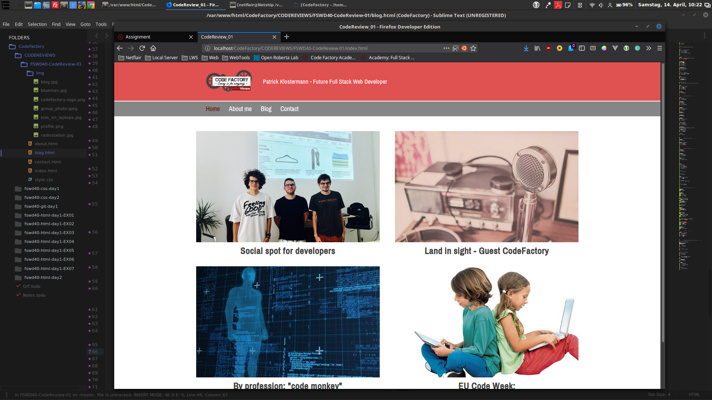

So, this was the first Code Review.
I find myself underestimateing some challenges, like this Code Review. I thought, this wouldnt be too hard to put together, but in the end it took me quite some time.
One of the biggest problems was to actually not knowing what i am allowed to do or what code to use.
Like, i would have wanted to edit the images, so they have the same size, wich would have been a bit easier.
Also, am i actually allowed to use mediaquerries to have the site more responsive?
Or do i have to follow the given screen shot exactly, in terms of colors, font, and alignment, well besides the 2x2 grid.
Well it says "use it as a guide", and i looked in the internet for the definition of "guide". So i came to the conclusion that it would be ok to edit a bit of the design.
The trainer also said we could use other code, IF i remember right, as long as we know what it is and does, and dont just copy&paste.
I used mediaqueries before the course already, so i thought it will be fine adding some extra responsivness.
After all, if i remove those, the sites are still "bit" responsive i guess, hard to tell actually what "a bit" is.
All in all it was an interesting experience, and fun to do, even though some parts where a bit frustrating, like the image grid. But maybe thats just me, i wanted the images to look good on different sizes, not cut off or oddly sizeings because of the image sizes itself, and filling the space good.
I am looking forward to the next Code Review and the Challenges until then.
I hope i did the Code Review correct.
We´ll see how it turns out, stay tuned. :)
blog
Code Review 01
by Patrick Klostermann - 14 April 2018
